This article compares emeans() (Bessa et al., 2026) with
ten other clustering functions available in R on the MNIST handwritten
digits (LeCun et al., 1998): 70,000 images of 28 by 28 pixels, each one
a row of 784 grey levels. Each method is asked for 10, 100 and 1,000
clusters on subsets of 5,000 to 70,000 images. The first half compares
run time, peak memory and partition quality; the second draws the
clusters on a UMAP embedding and shows the centroids as images.
The runs took about seven and a half hours, and building the site
does not repeat them. The scripts
in scripts_vignettes/mnist-benchmark download the data,
run each configuration once in a fresh R process and save timings,
labels and centroids to disk; the chunks below only read those
files.
library(tidyverse)
library(patchwork)
library(MetBrewer)
library(ggrepel)
library(scales)
library(aricode)
out <- ".dev/bench/mnist/out"
env <- readRDS(file.path(out, "env.rds"))
runs <- read_csv(file.path(out, "runs.csv"), show_col_types = FALSE)
trace <- read_csv(file.path(out, "emeans_trace.csv"), show_col_types = FALSE)
recipe <- read_csv(file.path(out, "emeans_recipe.csv"), show_col_types = FALSE)
mnist <- readRDS(file.path(out, "data", "mnist.rds"))
umap <- readRDS(file.path(out, "data", "umap.rds"))
subsets <- readRDS(file.path(out, "data", "subsets.rds"))
digit <- mnist$label
read_labels <- function(fit_id) readRDS(file.path(out, "labels", paste0(fit_id, ".rds")))
read_centers <- function(run_id) readRDS(file.path(out, "centers", paste0(run_id, ".rds")))
method_key <- c(
emeans_single = "e-means (single)", emeans_double = "e-means (double)",
kmeans_hw = "kmeans Hartigan-Wong", kmeans_lloyd = "kmeans Lloyd",
clusterr_kmeans = "ClusterR KMeans", clusterr_minibatch = "ClusterR mini-batch",
clara = "clara", mclust_eii = "Mclust EII",
stats_hclust = "hclust Ward", flashclust = "flashClust Ward",
fastcluster_hclust = "fastcluster hclust", fastcluster_vector = "fastcluster vector"
)
# Colours from MetBrewer "Signac" (methods) and "Redon" (digits), picked so that methods of the
# same kind, and digits that sit next to each other on the UMAP, get distinct colours.
signac <- as.character(met.brewer("Signac", 14))
pal_method <- set_names(signac[c(3, 2, 12, 11, 13, 14, 5, 6, 9, 10, 7, 4)], method_key)
redon <- as.character(met.brewer("Redon", 12))
pal_digit <- set_names(redon[c(6, 1, 11, 2, 9, 5, 8, 12, 3, 4)], 0:9)
pal_status <- c(ok = "#3B7C70", timeout = "#CE9642", skipped = "#B6B6B6", "not run" = "#F0F0F0")
theme_set(theme_minimal(base_size = 11) +
theme(panel.grid.minor = element_blank(), legend.position = "bottom",
strip.text = element_text(face = "bold")))
scale_n <- scale_x_log10(breaks = c(5e3, 1e4, 2e4, 3e4, 7e4),
labels = label_number(scale_cut = cut_short_scale()))
# One row per run. The e-means epoch sweep (nepochs != 5) is kept apart.
runs <- runs |>
mutate(variant = if_else(method == "emeans", paste0("emeans_", precision), method),
variant = factor(method_key[variant], levels = method_key))
bench <- filter(runs, method != "emeans" | nepochs == 5)Setup
| Item | Value |
|---|---|
| CPU | Apple M2 with 8 cores (4 performance, 4 efficiency) |
| Memory | 16 GB |
| OS | macOS 27.2.1 |
| R | R version 4.6.1 (2026-06-24) |
| BLAS | libRblas.0.dylib |
| emeansR commit | 1d7c539 |
| Input | raw 784 pixels scaled 0-1 |
| Threads | 1 per run, runs one at a time |
| Time limit | 15 minutes per run |
The input is the raw pixels scaled to [0, 1], with no PCA. Every
method runs on one thread (n_threads = 1 for
emeans(), and OMP_NUM_THREADS,
VECLIB_MAXIMUM_THREADS, OPENBLAS_NUM_THREADS
set to 1 for the rest), and runs go one after another so that they do
not compete for memory bandwidth. The subsets are nested and stratified
by digit, so the 5,000 images are part of the 10,000, and so on.
The partitioning methods run with seeds 1, 2 and 3. A run longer than
15 minutes is stopped and recorded as a timeout; larger subsets of the
same method and k are then skipped. The hierarchical
methods are deterministic: they build one tree per subset, which is then
cut at 10, 100 and 1,000 clusters.
| Function | Settings | Algorithm |
|---|---|---|
emeansR::emeans() |
nepochs = 5, precision = "single" and
"double"
|
Bessa et al. (2026) |
stats::kmeans() |
Hartigan-Wong and Lloyd, iter.max = 100,
nstart = 1
|
Hartigan and Wong (1979); Lloyd (1982) |
ClusterR::KMeans_rcpp() |
k-means++ start, max_iters = 100
|
Lloyd (1982); Arthur and Vassilvitskii (2007) |
ClusterR::MiniBatchKmeans() |
batch of 1,024 rows, k-means++ start,
max_iters = 100
|
Sculley (2010) |
cluster::clara() |
50 samples, pamLike = TRUE
|
Kaufman and Rousseeuw (1990) |
mclust::Mclust() |
model "EII", k = 10 only, up to 10,000
images |
Scrucca et al. (2016) |
stats::hclust(),
fastcluster::hclust()
|
"ward.D2" on dist()
|
Ward (1963); Murtagh and Legendre (2014); Müllner (2013) |
flashClust::flashClust() |
"ward" on squared distances (same merges as
"ward.D2") |
Langfelder and Horvath (2012) |
fastcluster::hclust.vector() |
"ward", no distance matrix |
Müllner (2013) |
The package versions used for the runs:
| Package | Version | Methods |
|---|---|---|
| ClusterR | 1.3.7 | ClusterR KMeans, ClusterR mini-batch |
| cluster | 2.1.8.3 | clara |
| emeansR | 0.1.0 | e-means (double), e-means (single) |
| fastcluster | 1.3.0 | fastcluster hclust, fastcluster vector |
| flashClust | 1.1.4 | flashClust Ward |
| mclust | 6.1.3 | Mclust EII |
| stats | 4.6.1 | kmeans Hartigan-Wong, kmeans Lloyd, hclust Ward |
The data
Show code
digit_tiles <- function(m, ids) {
# Rows of m are images stored row by row (pixel 1 is top left).
as_tibble(m, .name_repair = ~ as.character(seq_along(.x))) |>
mutate(id = ids) |>
pivot_longer(-id, names_to = "pixel", values_to = "value") |>
mutate(pixel = as.integer(pixel) - 1L, row = pixel %/% 28L, col = pixel %% 28L)
}
set.seed(42)
sample_ids <- map(0:9, \(d) sample(which(digit == d), 6)) |> unlist()
digit_tiles(mnist$x[sample_ids, ], sample_ids) |>
mutate(digit = digit[id], copy = match(id, sample_ids) %% 6) |>
ggplot(aes(col, -row, fill = value)) +
geom_raster() +
facet_grid(copy ~ digit, switch = "y") +
scale_fill_gradientn(colours = met.brewer("Tam", direction = -1)) +
coord_equal() +
theme_void() +
theme(legend.position = "none", strip.text.y = element_blank())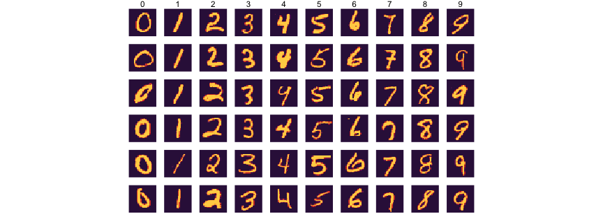
Which runs finished
Show code
status_grid <- bench |>
group_by(variant, n, k) |>
summarise(status = case_when(all(status == "ok") ~ "ok",
any(status == "timeout") ~ "timeout",
.default = "skipped"), .groups = "drop") |>
complete(variant, n, k, fill = list(status = "not run")) |>
mutate(status = factor(status, names(pal_status)))
ggplot(status_grid, aes(factor(n), fct_rev(variant), fill = status)) +
geom_tile(colour = "white", linewidth = 0.8) +
facet_wrap(~k, labeller = label_both) +
scale_fill_manual(values = pal_status, drop = FALSE) +
scale_x_discrete(labels = \(x) label_number(scale_cut = cut_short_scale())(as.numeric(x))) +
labs(x = "Images", y = NULL, fill = NULL)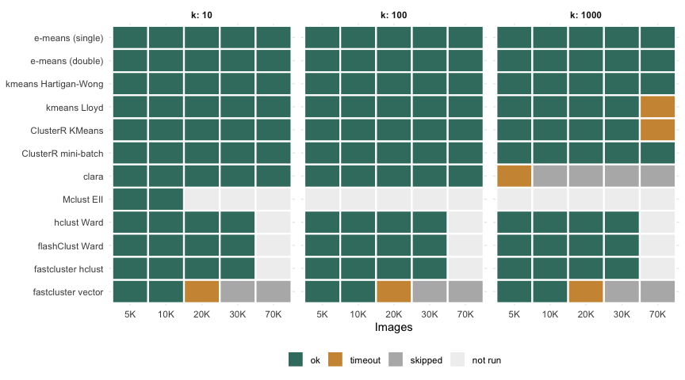
Of 368 planned runs (12 more for the e-means epoch sweep below), 338 finished, 6 hit the time limit and the rest were skipped after a timeout. The timeouts were:
| Method | Images | k |
|---|---|---|
| kmeans Lloyd | 70,000 | 1,000 |
| ClusterR KMeans | 70,000 | 1,000 |
| clara | 5,000 | 1,000 |
| fastcluster vector | 20,000 | 10 |
| fastcluster vector | 20,000 | 100 |
| fastcluster vector | 20,000 | 1,000 |
Run time
timing <- bench |>
filter(status %in% c("ok", "timeout")) |>
mutate(elapsed_s = if_else(status == "timeout", env$timeout_s, elapsed_s)) |>
group_by(variant, family, n, k) |>
summarise(med = median(elapsed_s), lo = min(elapsed_s), hi = max(elapsed_s),
timeout = any(status == "timeout"), .groups = "drop")Show code
ggplot(timing, aes(n, med, colour = variant, fill = variant)) +
geom_hline(yintercept = env$timeout_s, linetype = "dashed", colour = "grey50") +
geom_ribbon(aes(ymin = lo, ymax = hi), alpha = 0.15, colour = NA) +
geom_line(linewidth = 0.7) +
geom_point(aes(shape = timeout), size = 2) +
facet_wrap(~k, labeller = label_both) +
scale_n +
scale_y_log10(labels = label_number(accuracy = 0.1, suffix = " s")) +
scale_colour_manual(values = pal_method, aesthetics = c("colour", "fill")) +
scale_shape_manual(values = c(`FALSE` = 16, `TRUE` = 4), guide = "none") +
labs(x = "Images", y = "Elapsed time (log scale)", colour = NULL, fill = NULL,
caption = "Line: median of 3 seeds; band: fastest to slowest seed; ×: stopped at the 15-minute limit.") +
guides(colour = guide_legend(nrow = 3))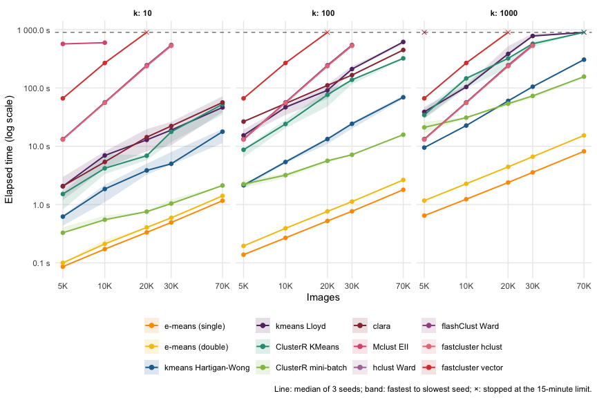
On all 70,000 images emeans() in single precision took
1.2, 1.8 and 8.2 seconds for 10, 100 and 1,000 clusters.
kmeans() with the default Hartigan-Wong algorithm took 18,
69 and 306 seconds. The next plot divides each method’s median time by
the time of emeans() in single precision.
Show code
ggplot(speedup, aes(ratio, fct_reorder(variant, ratio), colour = variant)) +
geom_vline(xintercept = 1, colour = "grey60") +
geom_segment(aes(x = 1, xend = ratio, yend = variant), linewidth = 0.6) +
geom_point(size = 3) +
geom_text(aes(label = paste0(label_number(0.1)(ratio), "×")), hjust = -0.35, size = 3.2,
show.legend = FALSE) +
facet_wrap(~k, labeller = label_both) +
scale_x_log10(expand = expansion(mult = c(0.05, 0.3))) +
scale_colour_manual(values = pal_method, guide = "none") +
labs(x = "Time relative to e-means (single), 70,000 images (log scale)", y = NULL)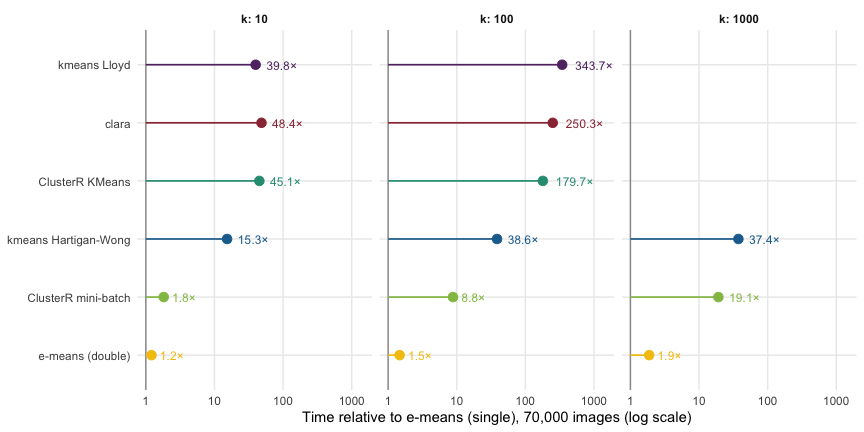
The hierarchical methods spend most of their time on the distance
matrix. fastcluster::hclust.vector() skips the matrix and
works on the vectors directly, which saves memory but was the slowest of
the four.
Show code
bench |>
filter(family == "hierarchical", status == "ok", k == 10) |>
select(variant, n, `distance matrix` = dist_s, tree = tree_s, `cut at k = 10` = cut_s) |>
pivot_longer(-c(variant, n), names_to = "step", values_to = "seconds") |>
filter(!is.na(seconds)) |>
mutate(step = fct_rev(factor(step, c("distance matrix", "tree", "cut at k = 10")))) |>
ggplot(aes(factor(n), seconds, fill = step)) +
geom_col(width = 0.7) +
facet_wrap(~variant, nrow = 1) +
scale_fill_manual(values = as.character(met.brewer("Hokusai2", 3))) +
scale_x_discrete(labels = \(x) label_number(scale_cut = cut_short_scale())(as.numeric(x))) +
labs(x = "Images", y = "Seconds", fill = NULL)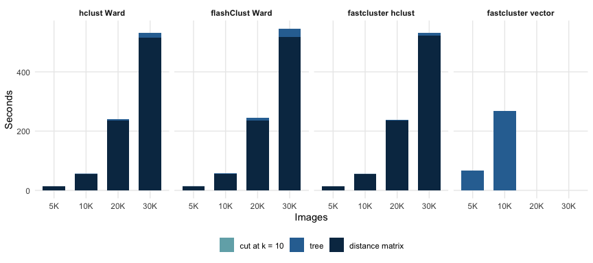
Memory
Peak memory is the maximum resident set size of the R process
reported by /usr/bin/time -l, minus the size of the process
after it loaded the data (rss_before_mb). It includes
copies the method makes of its input.
Show code
mem <- bench |>
filter(status == "ok") |>
mutate(mem_mb = max_rss_mb - rss_before_mb) |>
group_by(variant, n, k) |>
summarise(mem_mb = median(mem_mb), .groups = "drop")
ggplot(mem, aes(n, mem_mb, colour = variant)) +
geom_line(linewidth = 0.7) +
geom_point(size = 1.8) +
facet_wrap(~k, labeller = label_both) +
scale_n +
scale_y_log10(labels = label_number(suffix = " MB", big.mark = ",")) +
scale_colour_manual(values = pal_method) +
labs(x = "Images", y = "Peak memory above baseline (log scale)", colour = NULL) +
guides(colour = guide_legend(nrow = 3))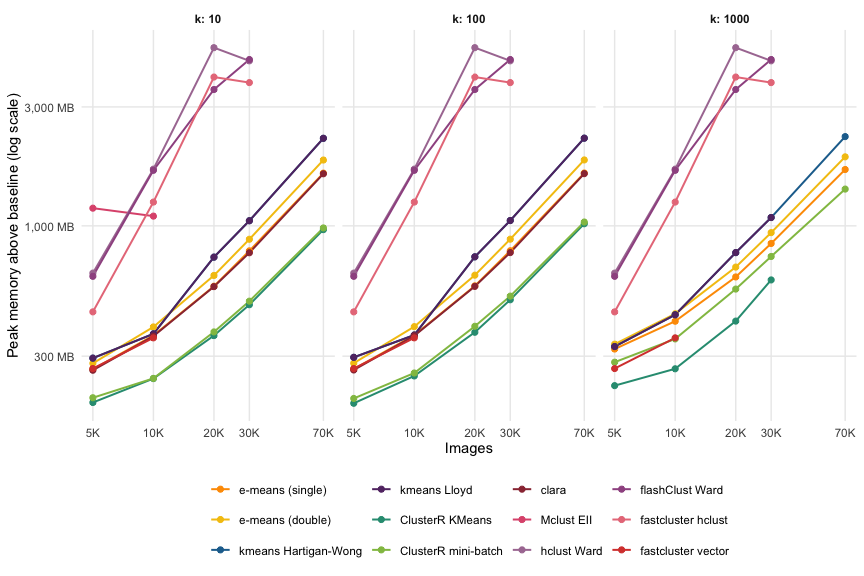
The input itself takes 419 MB at 70,000 images in double precision. The distance matrix of the Ward methods grows with the square of the number of images: 3,433 MB at 30,000 images.
Quality of the partitions
The main measure is the inertia: the mean squared Euclidean distance
from each image to the mean of its cluster, lower being better. It is
computed the same way for every method, from the labels, so
clara() medoids and Mclust() means do not
enter it. Agreement with the ten digits is also reported, as the
adjusted Rand index (ARI; Hubert and Arabie, 1985), normalised and
adjusted mutual information (NMI, AMI; Vinh et al., 2010) and purity,
but with 100 or 1,000 clusters the ARI is low by construction, since
each digit is split over many clusters.
Show code
hw_ref <- bench |>
filter(variant == "kmeans Hartigan-Wong", status == "ok") |>
group_by(n, k) |>
summarise(ref = median(inertia), .groups = "drop")
inertia_rel <- bench |>
filter(status == "ok") |>
inner_join(hw_ref, by = c("n", "k")) |>
mutate(rel = inertia / ref - 1) |>
group_by(variant, n, k) |>
summarise(med = median(rel), lo = min(rel), hi = max(rel), .groups = "drop")
ggplot(inertia_rel, aes(n, med, colour = variant)) +
geom_hline(yintercept = 0, colour = "grey50") +
geom_pointrange(aes(ymin = lo, ymax = hi), position = position_dodge(width = 0.08),
size = 0.25, linewidth = 0.5) +
geom_line(position = position_dodge(width = 0.08), linewidth = 0.4) +
facet_wrap(~k, labeller = label_both, scales = "free_y") +
scale_n +
scale_y_continuous(labels = label_percent()) +
scale_colour_manual(values = pal_method) +
labs(x = "Images", y = "Inertia relative to kmeans Hartigan-Wong", colour = NULL) +
guides(colour = guide_legend(nrow = 3))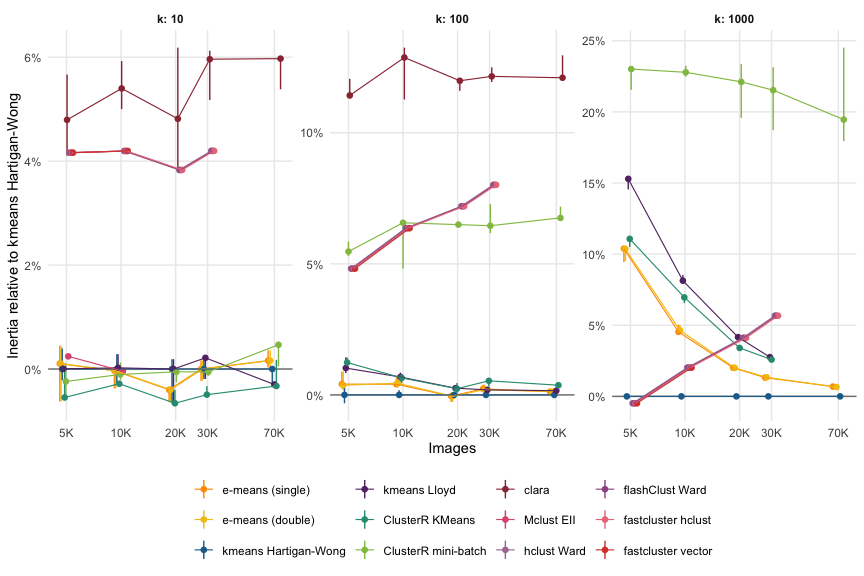
At 70,000 images emeans() and Hartigan-Wong reach almost
the same inertia: 39.4 against 39.3 at k = 10, 28.0 against
27.9 at k = 100 and 20.3 against 20.1 at
k = 1000. ClusterR’s mini-batch k-means falls behind as
k grows (24.0 at k = 1000).
The next plot puts time and inertia together. Points further down and to the left are better.
Show code
pareto <- bench |>
filter(n == 70000, status == "ok") |>
group_by(variant, k) |>
summarise(time = median(elapsed_s), inertia = median(inertia), .groups = "drop")
ggplot(pareto, aes(time, inertia, colour = variant)) +
geom_point(size = 3) +
geom_text_repel(aes(label = variant), size = 3, show.legend = FALSE, min.segment.length = 0,
seed = 1) +
facet_wrap(~k, labeller = label_both, scales = "free") +
scale_x_log10(labels = label_number(suffix = " s")) +
scale_colour_manual(values = pal_method, guide = "none") +
labs(x = "Elapsed time (log scale)", y = "Inertia")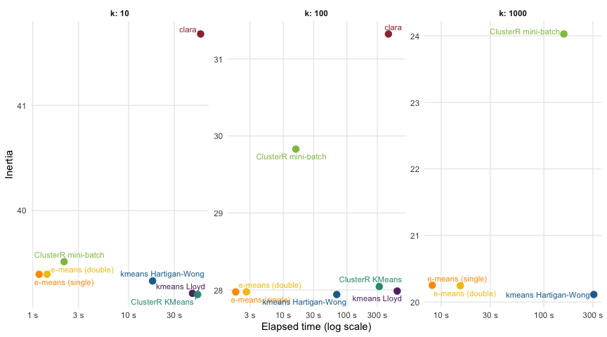
With ten clusters every method can be compared against the digits. At 10,000 images, the largest subset on which all twelve finished:
Show code
bench |>
filter(n == 10000, k == 10, status == "ok") |>
select(variant, seed, ARI = ari, NMI = nmi, AMI = ami, Purity = purity) |>
pivot_longer(ARI:Purity, names_to = "metric") |>
ggplot(aes(value, fct_rev(variant), colour = variant)) +
stat_summary(fun = median, geom = "point", shape = "|", size = 6) +
geom_point(alpha = 0.6, size = 2) +
facet_wrap(~metric, nrow = 1, scales = "free_x") +
scale_colour_manual(values = pal_method, guide = "none") +
labs(x = NULL, y = NULL,
caption = "Dots: seeds; bar: median.")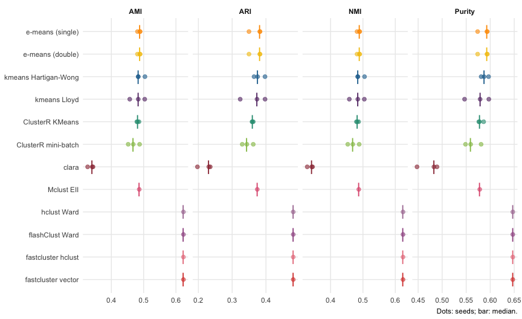
The Ward trees match the digits best (ARI 0.48, against 0.38 for
emeans() and 0.38 for Hartigan-Wong), although their
inertia is 4.2% higher.
With more clusters, purity rises because smaller clusters hold fewer mixed digits. NMI falls, since it also penalises splitting each digit over many clusters:
Show code
bench |>
filter(n == 30000, status == "ok") |>
group_by(variant, k) |>
summarise(across(c(nmi, purity), median), .groups = "drop") |>
pivot_longer(c(nmi, purity), names_to = "metric") |>
mutate(metric = recode(metric, nmi = "NMI", purity = "Purity")) |>
ggplot(aes(k, value, colour = variant)) +
geom_line(linewidth = 0.7) +
geom_point(size = 2) +
facet_wrap(~metric, scales = "free_y") +
scale_x_log10(breaks = c(10, 100, 1000)) +
scale_colour_manual(values = pal_method) +
labs(x = "k (log scale)", y = NULL, colour = NULL) +
guides(colour = guide_legend(nrow = 3))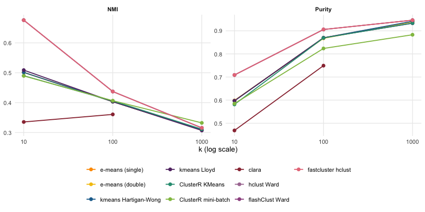
Inside e-means
Single and double precision
With precision = "single" the data are stored and
distances computed in 32-bit floats, while centroids and sums stay in 64
bits. Pairing runs by subset, k and seed:
Show code
prec <- bench |>
filter(method == "emeans", status == "ok") |>
select(precision, n, k, seed, elapsed_s, inertia) |>
pivot_wider(names_from = precision, values_from = c(elapsed_s, inertia)) |>
mutate(speed = elapsed_s_double / elapsed_s_single,
inertia_diff = inertia_single / inertia_double - 1)
p1 <- ggplot(prec, aes(n, speed, colour = factor(k))) +
geom_hline(yintercept = 1, colour = "grey60") +
geom_point(alpha = 0.7) +
stat_summary(fun = median, geom = "line") +
scale_n +
scale_colour_manual(values = as.character(met.brewer("Egypt", 3))) +
labs(x = "Images", y = "Time double / time single", colour = "k")
p2 <- ggplot(prec, aes(n, inertia_diff, colour = factor(k))) +
geom_hline(yintercept = 0, colour = "grey60") +
geom_point(alpha = 0.7) +
scale_n +
scale_y_continuous(labels = label_percent(0.001)) +
scale_colour_manual(values = as.character(met.brewer("Egypt", 3))) +
labs(x = "Images", y = "Inertia single / double - 1", colour = "k")
p1 + p2 + plot_layout(guides = "collect")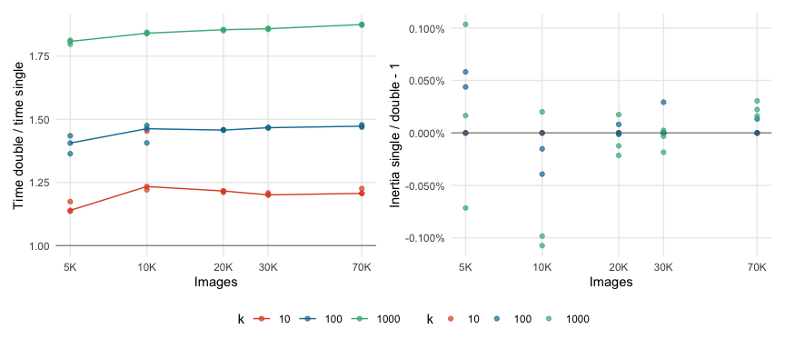
Double precision takes 1.2 times as long as single at
k = 10 and 1.9 times at k = 1000 (70,000
images). The inertia of the two differs by 0.107% at most.
Number of epochs
The default is five passes over the data. On all images with
k = 100 and double precision:
Show code
sweep <- runs |>
filter(method == "emeans", precision == "double", n == 70000, k == 100, status == "ok")
hw100 <- in70$inertia[in70$variant == "kmeans Hartigan-Wong" & in70$k == 100]
p1 <- ggplot(sweep, aes(nepochs, elapsed_s)) +
geom_point(colour = pal_method[["e-means (double)"]], size = 2) +
stat_summary(fun = median, geom = "line", colour = pal_method[["e-means (double)"]]) +
scale_x_continuous(breaks = c(1, 2, 3, 5, 10)) +
labs(x = "nepochs", y = "Seconds")
p2 <- ggplot(sweep, aes(nepochs, inertia)) +
geom_hline(yintercept = hw100, linetype = "dashed", colour = pal_method[["kmeans Hartigan-Wong"]]) +
annotate("text", x = 10, y = hw100, label = "kmeans Hartigan-Wong", vjust = -0.6, hjust = 1,
size = 3, colour = pal_method[["kmeans Hartigan-Wong"]]) +
geom_point(colour = pal_method[["e-means (double)"]], size = 2) +
stat_summary(fun = median, geom = "line", colour = pal_method[["e-means (double)"]]) +
scale_x_continuous(breaks = c(1, 2, 3, 5, 10)) +
labs(x = "nepochs", y = "Inertia")
p1 + p2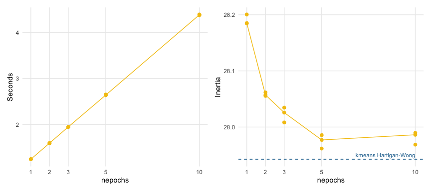
One epoch takes 1.2 seconds and reaches an inertia of 28.19; ten take 4.4 seconds for 27.99. Hartigan-Wong reaches 27.94 in 69 seconds.
Objective and balance per epoch
emeans() records the objective of each epoch (the summed
squared distance of the rows seen in that epoch, divided here by their
number) and the imbalance of cluster sizes (the mean of squared sizes
over the squared mean size; 1 means equal sizes).
Show code
trace_meta <- trace |>
inner_join(select(runs, run_id, n, k, seed, precision, nepochs), by = "run_id") |>
inner_join(select(recipe, run_id, epoch_rows), by = "run_id") |>
filter(precision == "double", nepochs == 5) |>
mutate(obj = obj / epoch_rows)
p1 <- ggplot(trace_meta, aes(epoch, obj, colour = factor(n), group = run_id)) +
geom_line(alpha = 0.7) +
facet_wrap(~k, labeller = label_both, scales = "free_y") +
labs(x = "Epoch", y = "Objective per row")
p2 <- ggplot(trace_meta, aes(epoch, imbalance, colour = factor(n), group = run_id)) +
geom_line(alpha = 0.7) +
facet_wrap(~k, labeller = label_both, scales = "free_y") +
labs(x = "Epoch", y = "Imbalance")
(p1 / p2 + plot_layout(guides = "collect")) &
scale_colour_manual(values = as.character(met.brewer("Hokusai3", 5)),
labels = \(x) label_comma()(as.numeric(x)), name = "Images")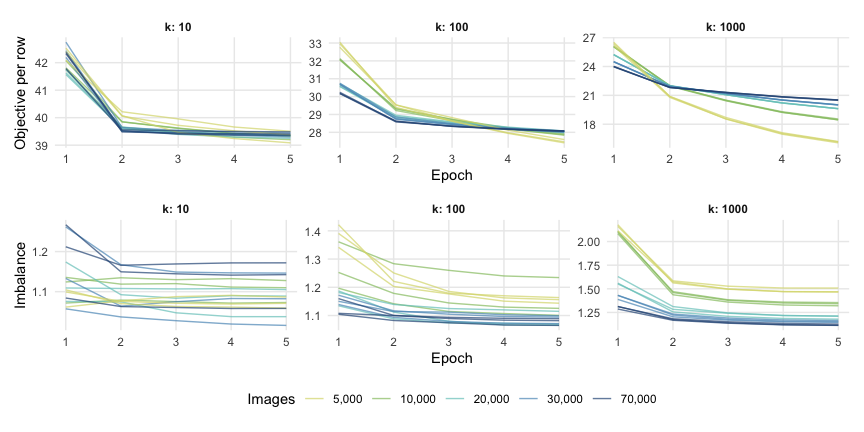
The recipe
emeans_recipe() sets the batch size and the starting
step size alpha0 from n, k,
d and nepochs, following the scaling laws in
the paper. These are the values used in the runs above:
Show code
recipe_grid <- recipe |>
inner_join(select(runs, run_id, n, k, precision), by = "run_id") |>
filter(precision == "double", nepochs == 5) |>
distinct(n, k, batch_size, alpha0, total_steps)
p1 <- ggplot(recipe_grid, aes(n, batch_size, colour = factor(k))) +
geom_line() + geom_point() +
scale_n + scale_y_log10(labels = label_comma()) +
labs(x = "Images", y = "Batch size", colour = "k")
p2 <- ggplot(recipe_grid, aes(n, alpha0, colour = factor(k))) +
geom_line() + geom_point() +
scale_n +
labs(x = "Images", y = "alpha0", colour = "k")
p3 <- ggplot(recipe_grid, aes(n, total_steps, colour = factor(k))) +
geom_line() + geom_point() +
scale_n + scale_y_log10(labels = label_comma()) +
labs(x = "Images", y = "Total steps", colour = "k")
(p1 + p2 + p3 + plot_layout(guides = "collect")) &
scale_colour_manual(values = as.character(met.brewer("Egypt", 3)))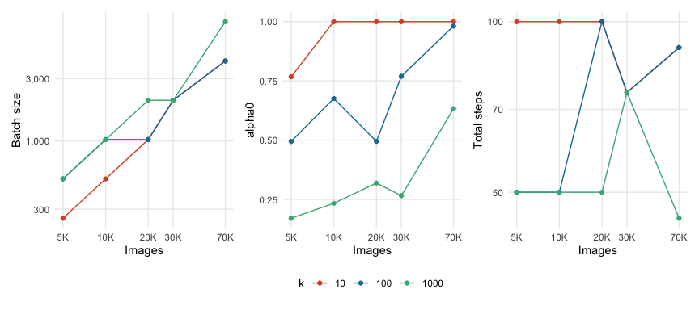
Stability across seeds
For each partitioning method, subset and k, the three
seeds give three partitions. The plot shows the adjusted Rand index
between each pair of them; 1 means the seeds agree exactly.
Show code
seed_ari <- bench |>
filter(family != "hierarchical", status == "ok") |>
group_by(variant, n, k) |>
filter(n() == 3) |>
summarise(fits = list(fit_id), .groups = "drop") |>
mutate(ari = map(fits, \(f) {
lab <- map(f, read_labels)
combn(3, 2, \(p) ARI(lab[[p[1]]], lab[[p[2]]]))
})) |>
select(-fits) |>
unnest(ari)
ggplot(seed_ari, aes(n, ari, colour = variant)) +
geom_point(alpha = 0.6, size = 1.6) +
stat_summary(fun = median, geom = "line") +
facet_wrap(~k, labeller = label_both) +
scale_n +
scale_colour_manual(values = pal_method) +
labs(x = "Images", y = "ARI between seeds", colour = NULL) +
guides(colour = guide_legend(nrow = 3))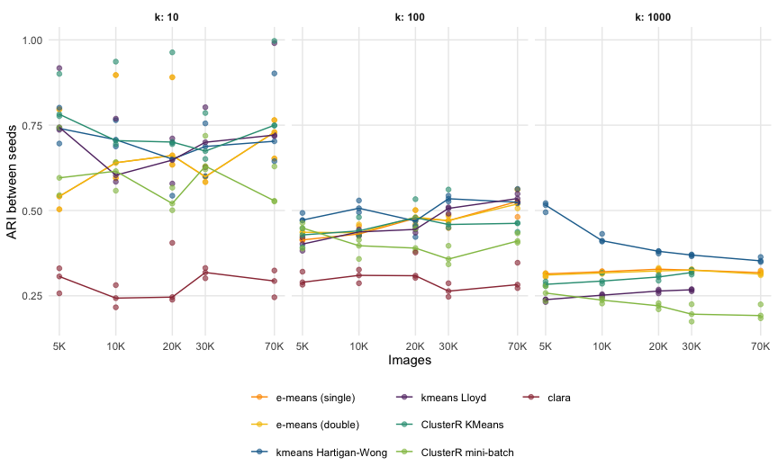
With k = 10 the ARI between two seeds ranges from 0.22
to 1.00. At k = 1000 and 70,000 images, kmeans
Hartigan-Wong is the most repeatable (median ARI 0.35), with
emeans() at 0.32.
Clusters on a UMAP embedding
The embedding is a UMAP (McInnes et al., 2018) of the first 50
principal components of all 70,000 images (uwot::umap(), 15
neighbours, min_dist = 0.1). It is only for display: every
method clustered the raw pixels. Coloured by the true digit:
Show code
um <- tibble(u1 = umap[, 1], u2 = umap[, 2], digit = factor(digit))
digit_centres <- um |>
group_by(digit) |>
summarise(across(c(u1, u2), median))
ggplot(um, aes(u1, u2, colour = digit)) +
geom_point(size = 0.05, alpha = 0.4, shape = 16) +
geom_label(data = digit_centres, aes(label = digit), fill = "white", size = 5,
linewidth = 0, show.legend = FALSE) +
scale_colour_manual(values = pal_digit, guide = "none") +
coord_equal() +
theme_void()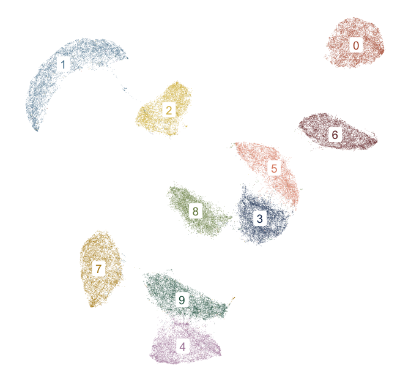
Ten clusters
Each cluster is coloured by the digit most of its images belong to. When two clusters share a colour, the method split one digit in two, which means some other digit has no cluster of its own.
k10_methods <- c("e-means (single)", "kmeans Hartigan-Wong", "kmeans Lloyd", "ClusterR KMeans",
"ClusterR mini-batch", "clara")
k10_fits <- bench |>
filter(n == 70000, k == 10, seed == 1, status == "ok", variant %in% k10_methods) |>
select(variant, fit_id, run_id)
majority <- function(cl) {
tibble(cluster = cl, digit = digit) |>
count(cluster, digit) |>
slice_max(order_by = n, n = 1, with_ties = FALSE, by = cluster) |>
select(cluster, major = digit)
}
k10 <- k10_fits |>
mutate(cluster = map(fit_id, read_labels)) |>
mutate(points = map(cluster, \(cl) {
um |>
mutate(cluster = cl) |>
left_join(majority(cl), by = "cluster") |>
mutate(major = factor(major, 0:9))
})) |>
select(variant, points) |>
unnest(points) |>
mutate(variant = factor(variant, k10_methods), wrong = as.character(digit) != as.character(major))Show code
ggplot(k10, aes(u1, u2, colour = major)) +
geom_point(size = 0.02, alpha = 0.35, shape = 16) +
facet_wrap(~variant, ncol = 3) +
scale_colour_manual(values = pal_digit, drop = FALSE) +
coord_equal() +
theme_void() +
theme(legend.position = "bottom", strip.text = element_text(face = "bold")) +
guides(colour = guide_legend(nrow = 1, override.aes = list(size = 3, alpha = 1))) +
labs(colour = "Majority digit of the cluster")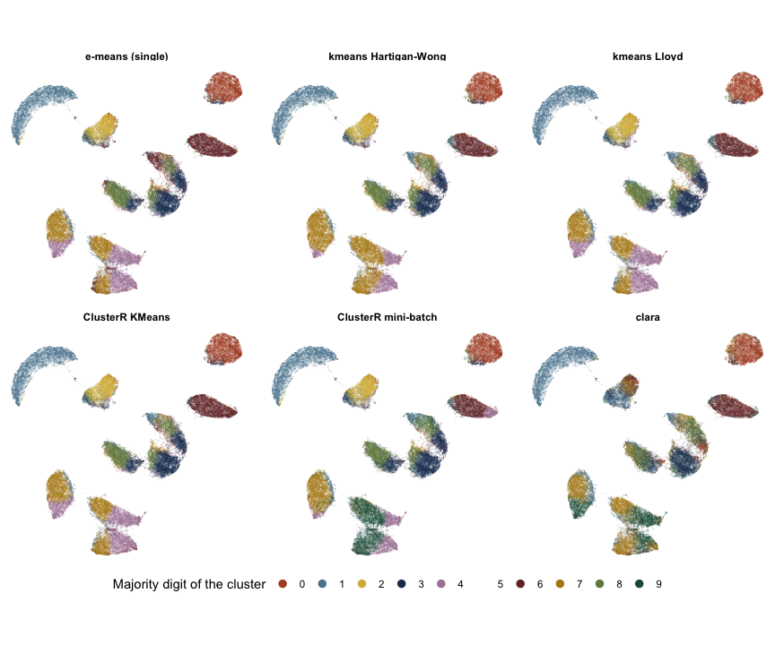
The images whose digit differs from the majority of their cluster, in red:
Show code
wrong_rate <- k10 |>
group_by(variant) |>
summarise(rate = mean(wrong))
ggplot(arrange(k10, wrong), aes(u1, u2, colour = wrong)) +
geom_point(size = 0.02, alpha = 0.35, shape = 16) +
geom_text(data = wrong_rate, aes(x = -Inf, y = Inf, label = label_percent(0.1)(rate)),
inherit.aes = FALSE, hjust = -0.2, vjust = 1.5, size = 3.5) +
facet_wrap(~variant, ncol = 3) +
scale_colour_manual(values = c(`FALSE` = "grey85", `TRUE` = met.brewer("Hiroshige")[1]),
guide = "none") +
coord_equal() +
theme_void() +
theme(strip.text = element_text(face = "bold"))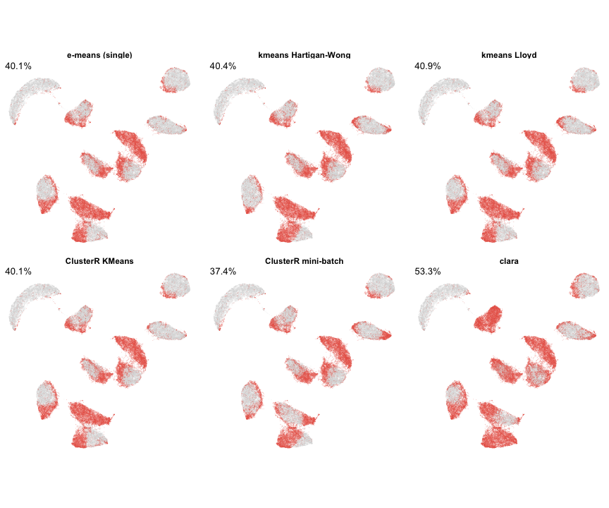
emeans() places 40.1% of the images in a cluster of
another digit, Hartigan-Wong 40.4% and clara() 53.3%.
Almost every 1 lands in a cluster of 1s, while the 4, 7 and 9 group and
the 3, 5 and 8 group, which also touch on the UMAP, carry most of the
red.
A hundred clusters
With k = 100, emeans() cuts every digit
into several clusters. The labels mark the median UMAP position of each
cluster and its majority digit.
Show code
fit100 <- bench |>
filter(variant == "e-means (single)", n == 70000, k == 100, seed == 1) |>
pull(fit_id)
cl100 <- read_labels(fit100)
maj100 <- majority(cl100) |> arrange(cluster)
um100 <- um |>
mutate(cluster = cl100) |>
left_join(majority(cl100), by = "cluster") |>
mutate(major = factor(major, 0:9))
c100 <- um100 |>
group_by(cluster, major) |>
summarise(across(c(u1, u2), median), size = n(), .groups = "drop")
ggplot(um100, aes(u1, u2, colour = major)) +
geom_point(size = 0.03, alpha = 0.25, shape = 16) +
geom_point(data = c100, aes(size = size), shape = 21, fill = "white", colour = "grey20") +
geom_text(data = c100, aes(label = major), size = 2.3, colour = "grey10") +
scale_colour_manual(values = pal_digit, guide = "none") +
scale_size_area(max_size = 5, guide = "none") +
coord_equal() +
theme_void()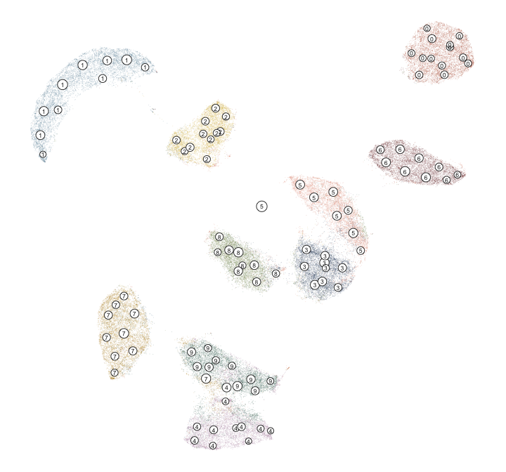
A thousand clusters
At k = 1000 the cluster centres cover the embedding.
Each point is the median UMAP position of one cluster, sized by the
number of images in it.
Show code
k1000 <- bench |>
filter(n == 70000, k == 1000, seed == 1, status == "ok",
variant %in% c("e-means (single)", "kmeans Hartigan-Wong", "ClusterR mini-batch")) |>
select(variant, fit_id) |>
mutate(centres = map(fit_id, \(f) {
um |>
mutate(cluster = read_labels(f)) |>
group_by(cluster) |>
summarise(across(c(u1, u2), median), size = n(),
major = names(which.max(table(digit))))
})) |>
select(-fit_id) |>
unnest(centres)
ggplot(k1000, aes(u1, u2, colour = factor(major, 0:9), size = size)) +
geom_point(data = um, aes(u1, u2), inherit.aes = FALSE, size = 0.02, colour = "grey90") +
geom_point(alpha = 0.7) +
facet_wrap(~variant) +
scale_colour_manual(values = pal_digit, guide = "none") +
scale_size_area(max_size = 2.5, guide = "none") +
coord_equal() +
theme_void() +
theme(strip.text = element_text(face = "bold"))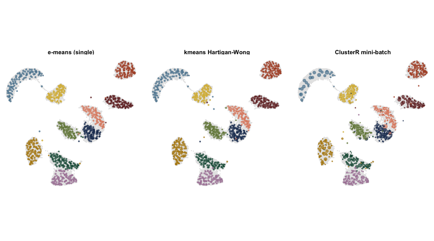
Show code
ggplot(k1000, aes(size, colour = variant)) +
stat_ecdf(linewidth = 0.7) +
scale_x_log10() +
scale_colour_manual(values = pal_method) +
labs(x = "Images per cluster (log scale)", y = "Share of clusters", colour = NULL)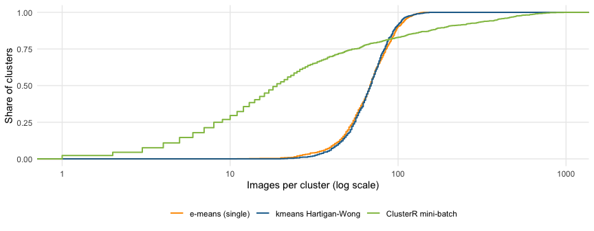
Centroids as images
A centroid in pixel space is itself an image. These are the centres
each method returned for k = 10 on all images (medoids for
clara()), next to the mean image of each true digit. The
clusters are ordered by their majority digit.
Show code
centroid_runs <- bench |>
filter(n == 70000, k == 10, seed == 1, status == "ok",
variant %in% c("e-means (single)", "kmeans Hartigan-Wong", "ClusterR mini-batch", "clara")) |>
arrange(variant) |>
select(variant, run_id, fit_id)
digit_means <- rowsum(mnist$x, digit) / as.vector(table(digit))
centre_tiles <- centroid_runs |>
mutate(tiles = map2(run_id, fit_id, \(r, f) {
own <- read_centers(r)$own
maj <- majority(read_labels(f)) |> arrange(cluster)
ord <- order(maj$major, maj$cluster)
digit_tiles(own[ord, ], seq_along(ord)) |> mutate(major = maj$major[ord][id])
})) |>
select(variant, tiles) |>
unnest(tiles) |>
mutate(variant = as.character(variant))
truth_tiles <- digit_tiles(digit_means, 1:10) |>
mutate(variant = "Digit means", major = id - 1L)
bind_rows(truth_tiles, centre_tiles) |>
mutate(variant = fct_inorder(variant)) |>
ggplot(aes(col, -row, fill = value)) +
geom_raster() +
facet_grid(variant ~ id, switch = "y") +
geom_text(aes(x = 2, y = -2, label = major), data = \(d) distinct(d, variant, id, major),
inherit.aes = FALSE, size = 2.6, colour = "grey40", hjust = 0, vjust = 1) +
scale_fill_gradientn(colours = met.brewer("Tam", direction = -1)) +
coord_equal() +
theme_void() +
theme(legend.position = "none", strip.text.x = element_blank(),
strip.text.y.left = element_text(angle = 0, hjust = 1, face = "bold"),
plot.margin = margin(5, 5, 5, 20))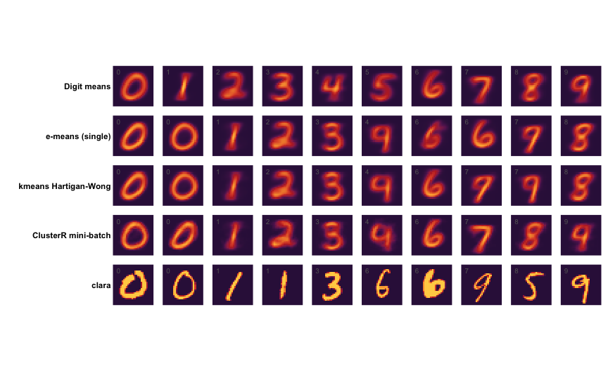
With k = 100, each digit gets between 8 and 13 of the
emeans() centroids. Within a digit they differ in slant and
stroke width, and the 2s split into looped and plain forms:
Show code
run100 <- bench |>
filter(variant == "e-means (single)", n == 70000, k == 100, seed == 1) |>
pull(run_id)
own100 <- read_centers(run100)$own
ord100 <- order(maj100$major, maj100$cluster)
digit_tiles(own100[ord100, ], seq_along(ord100)) |>
mutate(major = maj100$major[ord100][id]) |>
ggplot(aes(col, -row, fill = value)) +
geom_raster() +
facet_wrap(~id, ncol = 10) +
scale_fill_gradientn(colours = met.brewer("Tam", direction = -1)) +
coord_equal() +
theme_void() +
theme(legend.position = "none", strip.text = element_blank(),
panel.border = element_rect(fill = NA, colour = "grey85"))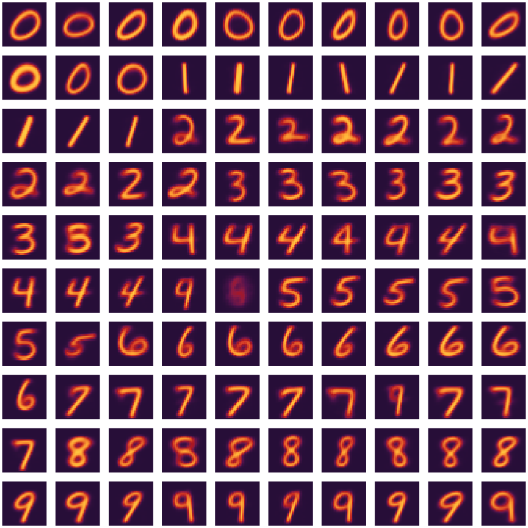
| 0 | 1 | 2 | 3 | 4 | 5 | 6 | 7 | 8 | 9 |
|---|---|---|---|---|---|---|---|---|---|
| 13 | 10 | 11 | 9 | 11 | 8 | 9 | 10 | 9 | 10 |
Comparing the clusters between methods
Clusters against digits
Each row is one cluster from the k = 10 fits on all
images, and each tile the share of its images that show a given
digit.
Show code
k10_fits |>
filter(variant %in% c("e-means (single)", "kmeans Hartigan-Wong", "ClusterR mini-batch", "clara")) |>
mutate(tab = map(fit_id, \(f) {
cl <- read_labels(f)
maj <- majority(cl)
tibble(cluster = cl, digit = digit) |>
count(cluster, digit) |>
mutate(share = n / sum(n), .by = cluster) |>
left_join(maj, by = "cluster") |>
mutate(row = paste(major, cluster))
})) |>
select(variant, tab) |>
unnest(tab) |>
mutate(row = fct_reorder(row, major + cluster / 100, .desc = TRUE)) |>
ggplot(aes(factor(digit), row, fill = share)) +
geom_tile(colour = "white") +
facet_wrap(~variant, scales = "free_y", nrow = 1) +
scale_fill_gradientn(colours = met.brewer("Hokusai2"), labels = label_percent()) +
scale_y_discrete(labels = \(x) sub(" .*", "", x)) +
labs(x = "True digit", y = "Cluster (by majority digit)", fill = "Share of cluster") +
theme(panel.grid = element_blank())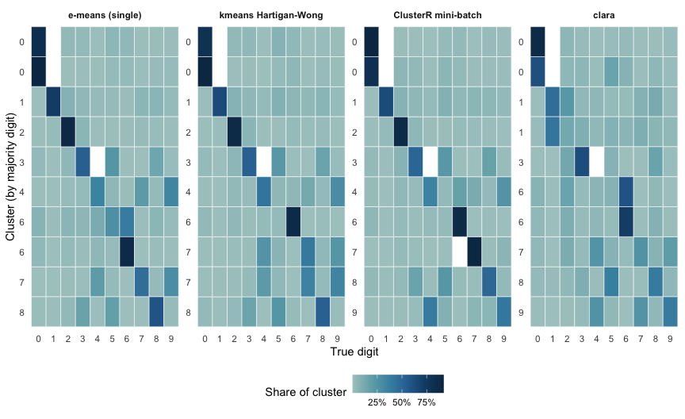
Show code
# Share of each digit's images that land in a cluster whose majority is that digit.
k10 |>
group_by(variant, digit) |>
summarise(recall = mean(!wrong), .groups = "drop") |>
ggplot(aes(digit, recall, colour = variant)) +
geom_point(size = 2.5, alpha = 0.9, position = position_dodge(width = 0.7)) +
scale_y_continuous(labels = label_percent(), limits = c(0, 1)) +
scale_colour_manual(values = pal_method) +
labs(x = "Digit", y = "Images in a cluster with\ntheir digit as majority", colour = NULL,
title = "k = 10, 70,000 images, seed 1") +
guides(colour = guide_legend(nrow = 2))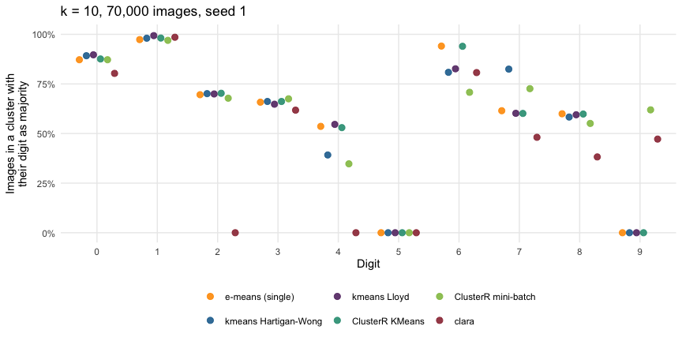
e-means against Hartigan-Wong
Cross-tabulating the two k = 10 partitions shows which
clusters the two methods share and where they split the data
differently.
Show code
lab_em <- read_labels(k10_fits$fit_id[k10_fits$variant == "e-means (single)"])
lab_hw <- read_labels(k10_fits$fit_id[k10_fits$variant == "kmeans Hartigan-Wong"])
name_by_major <- function(cl) {
majority(cl) |>
arrange(major, cluster) |>
mutate(name = paste0(major, letters[row_number()]), .by = major) |>
mutate(name = if (n() == 1) as.character(major) else name, .by = major) |>
select(cluster, name)
}
nm_em <- name_by_major(lab_em)
nm_hw <- name_by_major(lab_hw)
tibble(em = lab_em, hw = lab_hw) |>
count(em, hw) |>
left_join(rename(nm_em, em = cluster, em_name = name), by = "em") |>
left_join(rename(nm_hw, hw = cluster, hw_name = name), by = "hw") |>
ggplot(aes(hw_name, fct_rev(em_name), fill = n)) +
geom_tile(colour = "white") +
geom_text(aes(label = if_else(n >= 500, label_comma()(n), "")), size = 2.6, colour = "white") +
scale_fill_gradientn(colours = met.brewer("Hokusai2"), transform = "log10",
labels = label_comma()) +
labs(x = "kmeans Hartigan-Wong cluster", y = "e-means cluster", fill = "Images",
caption = "Clusters named by majority digit; a, b mark a digit split in two.") +
theme(panel.grid = element_blank(), legend.position = "right")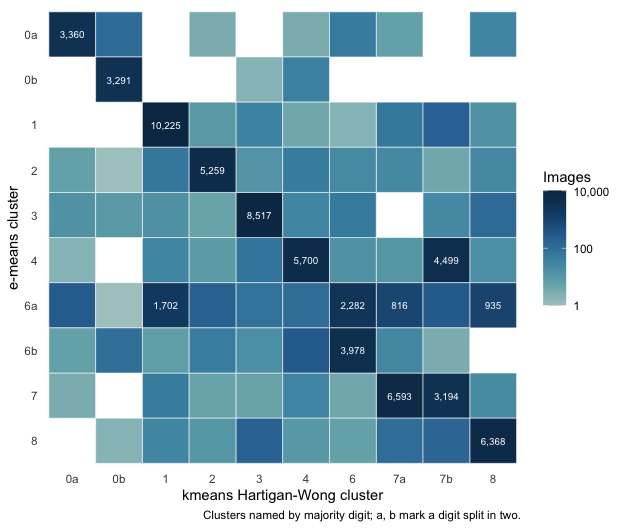
The ARI between the two partitions is 0.686.
All methods
Pairwise adjusted Rand index between every method’s
k = 10 partition (seed 1), with the true digits as one more
row. On the left all 70,000 images; on the right 10,000 images, where
the Ward methods and Mclust() finished too.
Show code
ari_matrix <- function(nn) {
fits <- bench |>
filter(n == nn, k == 10, seed == 1, status == "ok") |>
arrange(variant) |>
select(variant, fit_id)
labs <- c(list(`True digit` = digit[subsets[[as.character(nn)]]]),
set_names(map(fits$fit_id, read_labels), as.character(fits$variant)))
expand_grid(a = names(labs), b = names(labs)) |>
mutate(ari = map2_dbl(a, b, \(x, y) ARI(labs[[x]], labs[[y]])),
a = factor(a, names(labs)), b = factor(b, rev(names(labs))))
}
plot_ari <- function(d, title) {
ggplot(d, aes(a, b, fill = ari)) +
geom_tile(colour = "white") +
geom_text(aes(label = label_number(0.01)(ari)), size = 2.4) +
scale_fill_gradientn(colours = met.brewer("Hokusai2"), limits = c(0, 1)) +
labs(x = NULL, y = NULL, fill = "ARI", title = title) +
coord_equal() +
theme(axis.text.x = element_text(angle = 45, hjust = 1), panel.grid = element_blank())
}
plot_ari(ari_matrix(70000), "70,000 images") + plot_ari(ari_matrix(10000), "10,000 images") +
plot_layout(guides = "collect")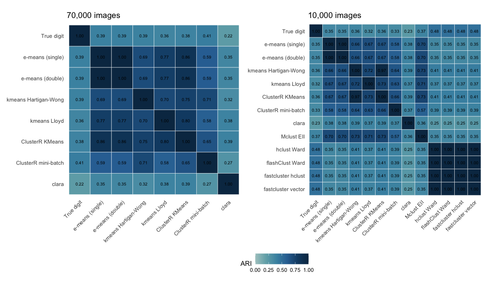
The four Ward implementations
stats::hclust(), flashClust::flashClust(),
fastcluster::hclust() and
fastcluster::hclust.vector() all compute Ward’s method. Cut
at the same k, they return the same partition wherever more
than one finished:
| Method | Fits compared | Identical to hclust | Lowest ARI |
|---|---|---|---|
| flashClust Ward | 12 | 12 | 1 |
| fastcluster hclust | 12 | 12 | 1 |
| fastcluster vector | 6 | 6 | 1 |
Caveats
- The timings come from one laptop (Apple M2, 16 GB) and one run per seed. The efficiency cores are slower; runs were serial, but the operating system decides which core a process lands on.
- Every method ran on one thread.
emeans(),ClusterRand BLAS-backed code can use more, and these runs do not show how the gaps change with more threads. - Peak memory counts the whole R process above its size after loading the data, including copies of the input made by each method.
- The ARI against digits says little for
kabove 10. The inertia is what the k-means methods minimise and what Ward’s merges approximate;clara()minimises unsquared distances to medoids instead. -
Mclust()was only run fork = 10up to 10,000 images: it took 599 seconds there. - The UMAP layout is a picture of PCA-50 neighbourhoods. Distances on it do not equal distances in pixel space.
References
Arthur, D. and Vassilvitskii, S. (2007). k-means++: the advantages of careful seeding. Proceedings of the Eighteenth Annual ACM-SIAM Symposium on Discrete Algorithms, 1027–1035.
Bessa, S., Mazaré, P.-E., Szilvasy, G., Touvron, H., Picard, D., Douze, M. and Jégou, H. (2026). e-means: outperforming k-means (in one-tenth the epochs). arXiv:2611.09501. https://doi.org/10.48550/arXiv.2611.09501
Hartigan, J. A. and Wong, M. A. (1979). Algorithm AS 136: a k-means clustering algorithm. Applied Statistics, 28(1), 100–108. https://doi.org/10.2307/2346830
Hubert, L. and Arabie, P. (1985). Comparing partitions. Journal of Classification, 2(1), 193–218. https://doi.org/10.1007/BF01908075
Kaufman, L. and Rousseeuw, P. J. (1990). Finding Groups in Data: An Introduction to Cluster Analysis. Wiley.
Langfelder, P. and Horvath, S. (2012). Fast R functions for robust correlations and hierarchical clustering. Journal of Statistical Software, 46(11). https://doi.org/10.18637/jss.v046.i11
LeCun, Y., Bottou, L., Bengio, Y. and Haffner, P. (1998). Gradient-based learning applied to document recognition. Proceedings of the IEEE, 86(11), 2278–2324. https://doi.org/10.1109/5.726791. Data used here: the Hugging Face copy https://huggingface.co/datasets/ylecun/mnist.
Lloyd, S. (1982). Least squares quantization in PCM. IEEE Transactions on Information Theory, 28(2), 129–137. https://doi.org/10.1109/TIT.1982.1056489
McInnes, L., Healy, J. and Melville, J. (2018). UMAP: uniform manifold approximation and projection for dimension reduction. arXiv:1802.03426. https://doi.org/10.48550/arXiv.1802.03426
Müllner, D. (2013). fastcluster: fast hierarchical, agglomerative clustering routines for R and Python. Journal of Statistical Software, 53(9). https://doi.org/10.18637/jss.v053.i09
Murtagh, F. and Legendre, P. (2014). Ward’s hierarchical agglomerative clustering method: which algorithms implement Ward’s criterion? Journal of Classification, 31(3), 274–295. https://doi.org/10.1007/s00357-014-9161-z
Sculley, D. (2010). Web-scale k-means clustering. Proceedings of the 19th International Conference on World Wide Web, 1177–1178. https://doi.org/10.1145/1772690.1772862
Scrucca, L., Fop, M., Murphy, T. B. and Raftery, A. E. (2016). mclust 5: clustering, classification and density estimation using Gaussian finite mixture models. The R Journal, 8(1), 289–317. https://doi.org/10.32614/RJ-2016-021
Vinh, N. X., Epps, J. and Bailey, J. (2010). Information theoretic measures for clusterings comparison: variants, properties, normalization and correction for chance. Journal of Machine Learning Research, 11, 2837–2854.
Ward, J. H. (1963). Hierarchical grouping to optimize an objective function. Journal of the American Statistical Association, 58(301), 236–244. https://doi.org/10.1080/01621459.1963.10500845
Session info
The session that knitted this article (the benchmark versions are in the setup table above):
#> ─ Session info ───────────────────────────────────────────────────────────────
#> setting value
#> version R version 4.6.1 (2026-06-24)
#> os macOS Golden Gate 27.2.1
#> system aarch64, darwin23
#> ui X11
#> language (EN)
#> collate C.UTF-8
#> ctype C.UTF-8
#> tz Europe/London
#> date 2026-11-15
#> pandoc 3.13 @ /opt/homebrew/bin/pandoc
#> quarto 1.11.9 @ /usr/local/bin/quarto
#>
#> ─ Packages ───────────────────────────────────────────────────────────────────
#> package * version date (UTC) lib source
#> aricode * 1.1.0 2026-05-13 [1] CRAN (R 4.6.0)
#> dplyr * 1.2.1 2026-04-03 [1] CRAN (R 4.6.0)
#> forcats * 1.0.1 2025-09-25 [1] CRAN (R 4.6.0)
#> ggplot2 * 4.0.4 2026-11-14 [1] CRAN (R 4.6.1)
#> ggrepel * 0.9.8 2026-03-17 [1] CRAN (R 4.6.0)
#> lubridate * 1.9.5 2026-02-04 [1] CRAN (R 4.6.0)
#> MetBrewer * 0.2.0 2022-03-21 [1] CRAN (R 4.6.0)
#> patchwork * 1.3.2 2025-08-25 [1] CRAN (R 4.6.0)
#> purrr * 1.2.2 2026-04-10 [1] CRAN (R 4.6.0)
#> readr * 2.2.0 2026-02-19 [1] CRAN (R 4.6.0)
#> scales * 1.4.0 2025-04-24 [1] CRAN (R 4.6.0)
#> stringr * 1.6.0 2025-11-04 [1] CRAN (R 4.6.0)
#> tibble * 3.3.1 2026-01-11 [1] CRAN (R 4.6.0)
#> tidyr * 1.3.2 2025-12-19 [1] CRAN (R 4.6.0)
#> tidyverse * 2.0.0 2023-02-22 [1] CRAN (R 4.6.0)
#>
#> [1] /Library/Frameworks/R.framework/Versions/4.6/Resources/library
#> * ── Packages attached to the search path.
#>
#> ──────────────────────────────────────────────────────────────────────────────